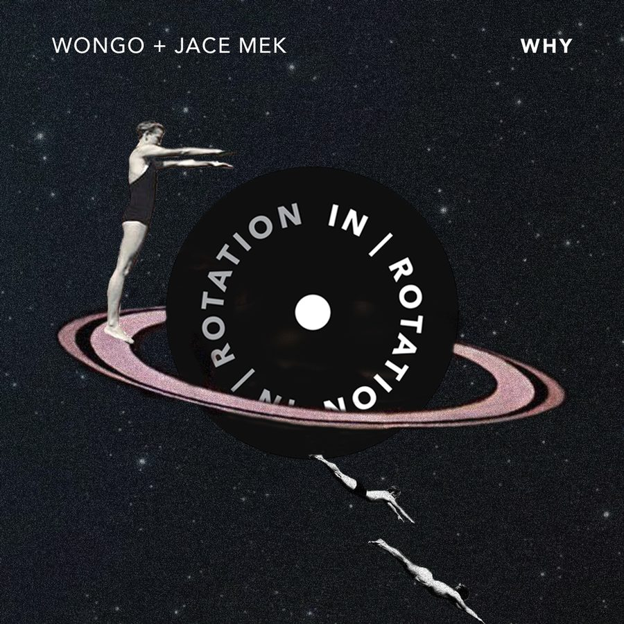

Jace Mek and Wongo Create Wacky Electro Fury on “Why” for IN / ROTATION


Jace Mek and Wongo are two young guns on the rise. The former hails from L.A., while the latter is from Australia—though they are both counted among the next generation of producers working hard to bring you fresh and wacky house bombs. Jace Mek was a previous winner in the Discovery Project competition series, before breaking out into the spotlight with releases on Confession. Wongo, on the other hand, has had the nod from label staples in his native country, like the Sweat It Out! crew.
Both take inspiration from the louder, noisier “fidgety” side of the dance music spectrum, so it’s no big surprise they ended up working together. Jace Mek remixed Wongo’s “Paradise” not long ago, which eventually led them to collab properly for the first time on “Why.”
“The public record is one of two versions that we created,” Jace Mek says of the creative process of the track that’s just arrived on IN / ROTATION. “After listening to the first version plenty of times, we decided that it would be interesting to take the same layout but create a different, more electro/gritty version of the track.”
Meanwhile, Wongo emphasises the experimental attitude of both himself and Jace Mek. “I never know what the outcome of a record will be until it’s done. I wouldn’t have wanted to guess how we could make two crazy producers make sense together, but we did. I went a little harder than I usually do on the synths, but Jace also met halfway on his choppy style.”
Wongo and Jace Mek’s “Why” is available here.
How has the year started out for you both?
Jace Mek: I’m great! First three and a half months of this year have been really slow in terms of performances, but I’ve gotten a lot of music done. I’m trying to figure out how to be weirder.
Wongo: Start of the year has been awesome; had a month off touring to finish some music, and got myself a bucket of fire to throw out at my future sets. Nice having some down time, too.
Wongo, you’ve had a lot of success in your home country of Australia, though you recently toured the US for the first time. Tell us about your journey so far.
W: It was a very big eye-opener for me, to be honest. I know the population is much larger in the US than Australia, but to DJ on a Tuesday night, and the club to be filled, was huge. People are hungry for knowledge, and there are so many parties going down that, depending on what you want to learn, you can go somewhere to do so. I love DJing in Australia, because it is my home turf, but I will be coming back to the US as much as I can.
Jace Mek, you’re a young name, though you’re making a big splash so far. You’ve already won Discovery Project. What sorts of gigs have you had since then?
J: It’s been a while since the Discovery Project win, but playing an Insomniac event was one of the things on my bucket list, and it was really cool checking that off. Since then, I was able to play a few shows with Tchami and Mercer on the Prophecy Tour, and I’ve had a couple of really cool shows In Houston, Las Vegas, Los Angeles, and Miami. Winning Discovery Project was the second show I ever played, so it was one of the shows that made me realize that making music and performing is what I want to do for the rest of my life.
Not too long ago, Jace Mek remixed Wongo’s “Paradise.” Was this when you two first connected, or is there more to the story?
W: I guess yes. As soon as I realized we were pals, I hit him for a remix right away. I had already been playing his records, but I knew as “Paradise” is not a club record, it needed someone to flip it on its head.
J: Maybe a year ago, a man named Mark Martinez, also known as Subset, tagged Wongo and me on a Facebook status, saying how we should collab. I think we both knew it was long overdue. So, we kept sending each other ideas. We ended up creating what would one day be a song titled “Why.” Remixing Wongo’s “Paradise” was something that Wongo had contacted me about, and I was all for it.
Do you feel that “Why” is an equal mash of both of your sounds?
W: 100,000 percent. I honestly have never felt something be so 50/50. Usually, one producer does more than the other, as it’s originally their idea. But yeah, I think this literally is halfway between us both.
J: I believe “Why” was supposed to be a combination of both of our sounds, but something different definitely emerged. We ended up creating a track with a classic electro feel to it.
What’s coming up next for the both of you?
J: I’m finishing up a lot of music with artists I admire, and I’m currently on my very first international tour in Australia. Also, I’m heading down to Las Vegas to play my second EDC in a row. I’m super excited for the future.
W: I will be back in the US for EDC and a few dates around the country, plus a heap of new music over the coming months.
Follow Wongo on Facebook| Twitter | SoundCloud
Follow Jace Mek on Facebook| Twitter | SoundCloud
Follow IN / ROTATION on Facebook| Twitter | SoundCloud